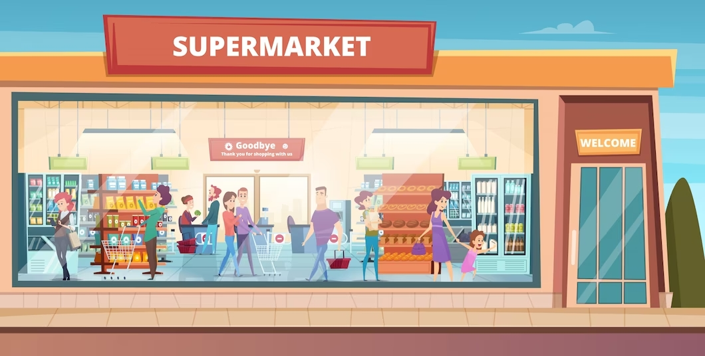

Undertook a comprehensive analysis of pizza sales data utilizing Power BI and MySQL Workbench, demonstrating proficiency in data cleaning, visualization, and comparison. Imported pizza sales data into Power BI and conducted data cleaning using Power Query and DAX to ensure data accuracy and consistency. Calculated essential KPIs such as Total Revenue, Average Order Value, Total Pizzas Sold, Total Orders, Average Pizzas Per Order, and others to provide insights into business performance. Examined daily and monthly trends for total orders to identify patterns and seasonality in pizza sales. Analyzed the percentage of sales by pizza category and size, as well as total pizzas sold by category to understand customer preferences. Identified top and bottom pizzas by revenue, quantity, and total orders to highlight best-selling and underperforming products. Replicated the analysis in MySQL Workbench using SQL queries to ensure consistency and accuracy of results, showcasing proficiency in database management and querying. This project demonstrates strong skills in data analysis, visualization, and database management, providing actionable insights for business decision-making in the pizza sales domain.


This project showcased proficiency in data preparation, exploratory analysis, and visualization, providing valuable insights into the Google Play Store app landscape using the Google Play Store Apps dataset from Kaggle and also my first data science project for Jovian course certification.

Led a comprehensive Walmart sales prediction project leveraging the Walmart Recruiting - Store Sales Forecasting dataset from Kaggle. Employed a systematic approach from understanding the dataset to deploying advanced machine learning models, including Ridge Regression, Decision Tree, Random Forest, and Gradient Boosting, for accurate sales forecasting. Implemented hyperparameter tuning to optimize model performance, and successfully reported the performance of the best model. This is my second machine learning project for Jovian course certification.

Engaged in a project centered on British Airways reviews sourced through web scraping from Skytrax using Beautiful Soup as first task of forage virtual internship. Key project stages encompassed understanding dataset nuances, formulating problem statements, and conducting thorough data preparation. Implemented data preprocessing techniques, coupled with sentiment analysis using NLTK and TextBlob for polarity assessments. Leveraged Matplotlib and Seaborn for visualizing sentiment trends through word clouds, presenting a comprehensive exploration of customer sentiments towards British Airways. This project showcased proficiency in web scraping, data preprocessing, sentiment analysis, and data visualization techniques.

Engaged in a virtual internship on the British Airways Forage platform, working with customer booking data. Executed fundamental data preparation steps, including preprocessing, categorical data encoding, and numeric feature scaling. Conducted exploratory data analysis, utilizing techniques like mutual information and SMOTE for a robust understanding of the dataset. Implemented a Random Forest model, assessing performance metrics such as accuracy, AUC score, and confusion matrix for comprehensive model evaluation. Fine-tuned model performance through hyperparameter tuning, optimizing the Random Forest model for enhanced predictive accuracy.

Imported the data professional survey dataset into Power BI and performed data cleaning using Power Query, DAX, and column manipulation techniques to ensure data accuracy and completeness. Conducted an in-depth analysis of a data professional survey dataset using Power BI, showcasing proficiency in data cleaning, visualization, and analysis.